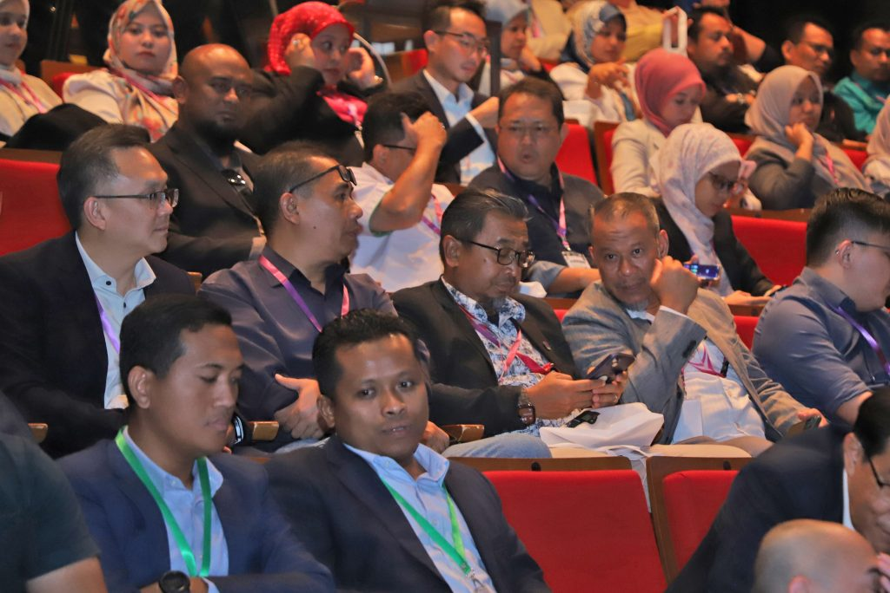
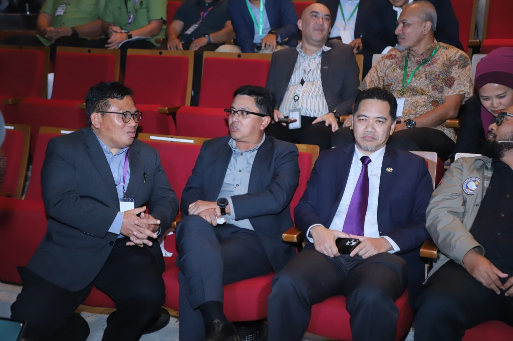
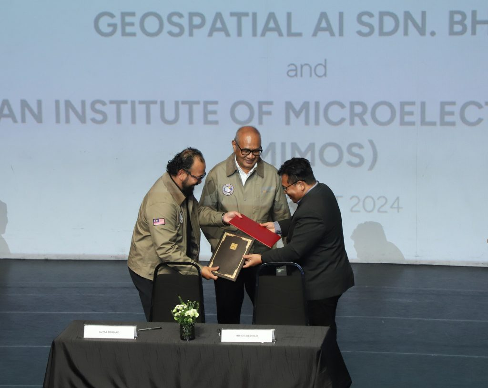
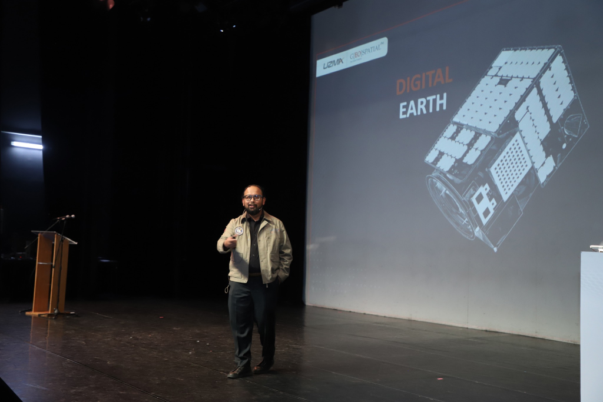

- Partners, UzmaSAT-1
Uzma gears up for the Launch of UzmaSAT-1 Satellite
- August 28, 2024
- By Media GeoAI
Uzma Berhad has officially established Memorandums of Understanding (MoUs) and exchanged Letters of Interest with key partners, including MIMOS Berhad, to take Malaysia’s geospatial industry to new heights.
As Uzma gears up for the launch of their UzmaSAT-1 satellite, MIMOS is excited to join forces and explore advanced satellite imaging techniques for border security and precision agriculture.
Together, we’re pushing the boundaries of innovation and technology. Stay tuned for more updates on this exciting journey!




#MIMOSBerhad#UzmaBerhad#GeospatialIndustry#UzmaSAT1#Partnership#Innovation#SatelliteImaging#BorderSecurity#PrecisionAgriculture
Source: Facebook MIMOS | 14th August 2024
Share the Post:Related Posts
Looking for Answers to Your Industry Issues?
If you want us to share more about space technology, EUDR, EO satellite applications, and industry related, feel free to drop your contact and experience the technology yourself.